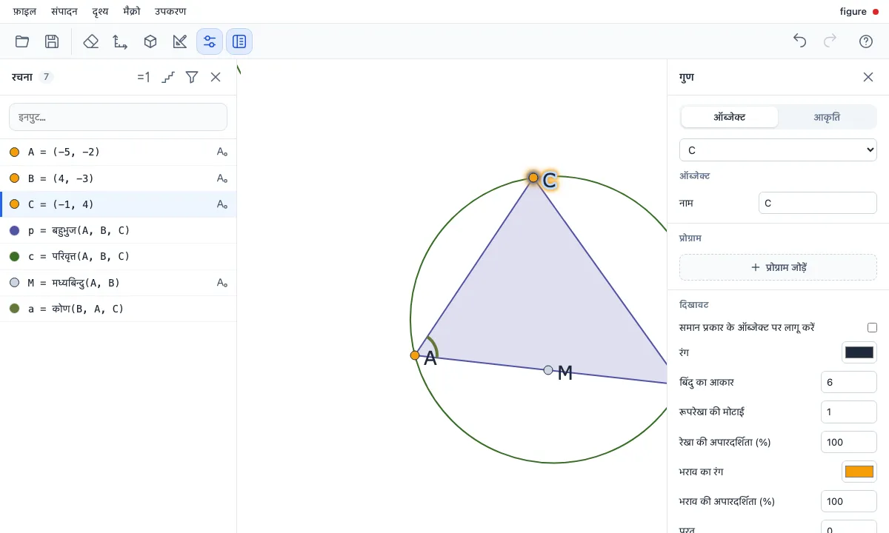
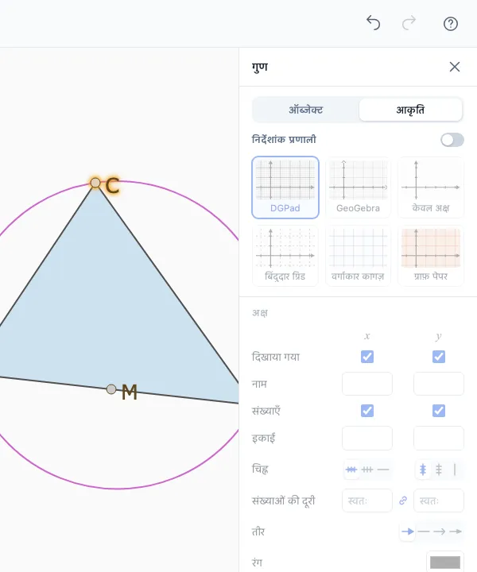

गुण और निर्देशांक प्रणाली

पैनल
- से या संदर्भ क्षेत्र के से खुलता है; अपने ✕, उसी बटन या Esc से बंद होता है।
- यह टूल पैलेट की जगह खुलता है: एक को खोलने से दूसरा बंद हो जाता है।
- दो टैब: ऑब्जेक्ट और आकृति।
- सेट किया जाने वाला ऑब्जेक्ट आकृति में, उसकी पंक्ति से, या «कोई ऑब्जेक्ट चुनें…» सूची में (छिपे ऑब्जेक्ट सहित) चुना जाता है। आकृति में क्लिक रचना करने के बजाय चुनता है; बटन और चेकबॉक्स सक्रिय हुए बिना चुने जाते हैं। पैलेट का टूल या इनपुट पंक्ति सामान्य रूप से रचना करते हैं, और बना ऑब्जेक्ट पैनल में दिखता है।
- बदलाव तुरंत होते हैं और पूर्ववत किए जा सकते हैं।
- संख्यात्मक फ़ील्ड: क्षैतिज खींचना मान तय करता है (Shift: दस गुना सूक्ष्म), क्लिक से उसे टाइप किया जा सकता है। एक बार खींचना पूर्ववत करने का एक ही चरण गिना जाता है।
- किसी रंग के पास ↺ बटन उसे टूल के डिफ़ॉल्ट रंग पर लौटाता है।
«ऑब्जेक्ट» टैब
| भाग | सेटिंग्स |
|---|---|
| ऑब्जेक्ट | नाम; कमांड या व्यंजक के लिए परिभाषा |
| प्रोग्राम | किसी बिंदु या व्यंजक के: उसका कछुआ और उसके घटना प्रोग्राम, ब्लॉकों में |
| दिखावट | समान प्रकार के ऑब्जेक्ट पर लागू करें, रंग, बिन्दु का आकार, मोटाई, रूपरेखा, रेखा और भराव की अपारदर्शिता, भराव का रंग, डैश, परत (खींचने का क्रम) |
| प्रदर्शन | दृश्यमान ऑब्जेक्ट, नाम दिखाएँ, स्थिर ऑब्जेक्ट (बहुभुज), निष्क्रिय ऑब्जेक्ट, पाठ का आकार, मान के दशमलव स्थान (या न दिखाएँ) |
| बिन्दु | आकृति (वृत्त, वर्ग, क्रॉस, समचतुर्भुज), डिग्री में नाम की स्थिति, निशान, क्षैतिज और ऊर्ध्वाधर चरण (छलाँगों में खिसकना) |
| रेखाखण्ड | चिह्न (समान लंबाई के निशान) |
| कोण | चाप की त्रिज्या, समकोण का चिह्न (खुला गुनिया, चाप, वर्ग, बिन्दु, गुनिया) |
| बिन्दुपथ, सूची | बिन्दुओं की संख्या; रेखाखंडों की मोटाई |
| स्लाइडर | चरण, लंबाई, ऊर्ध्वाधर, हैंडल का रंग और आकार |
| एनीमेशन | गति (0: रुकें), उल्टी दिशा, छोर पर: फिर से शुरू करें, आगे-पीछे या रुकें |
बनाते समय रंग
बनाया गया ऑब्जेक्ट अपने प्रकार का रंग लेता है: मुक्त बिन्दु और वस्तु पर बिन्दु नारंगी, रचित बिन्दु धूसर, रेखाखंड लाल, रेखाएँ नीली, वृत्त हरे, बहुभुज नील रंग से भरे… नई आकृति की पृष्ठभूमि सफ़ेद होती है।
कई ऑब्जेक्ट
बहु-चयन पर केवल सबकी साझा सेटिंग्स दिखती हैं; जो मान एक ऑब्जेक्ट से दूसरे में अलग हो, वह धूसर तिरछे अक्षरों में होता है। Ctrl-क्लिक, Shift-क्लिक या देर तक दबाना (आकृति या «रचना» पैनल) कोई ऑब्जेक्ट जोड़ते या हटाते हैं।
निष्क्रिय ऑब्जेक्ट
निष्क्रिय ऑब्जेक्ट: ऑब्जेक्ट पॉइंटर ले जाने, क्लिक या स्पर्श पर कोई प्रतिक्रिया नहीं देता। आकृति में उसे न खींचा जा सकता है, न चुना जा सकता है: पॉइंटर उसके नीचे की चीज़ तक पहुँचता है। गुण पैनल खुला रहने तक कोई ऑब्जेक्ट निष्क्रिय नहीं रहता, ताकि उसे चुनकर बॉक्स से निशान हटाया जा सके।
«आकृति» टैब

किसी अक्ष पर क्लिक यह टैब खोलता है।
| भाग | सेटिंग्स |
|---|---|
| निर्देशांक प्रणाली | दिखे या नहीं; नमूने DGPad, GeoGebra, केवल अक्ष, बिन्दुदार ग्रिड, वर्गाकार कागज़, ग्राफ़ पेपर (केवल दिखावट, न ज़ूम न पृष्ठभूमि) |
| अक्ष (x और y) | दिखाया गया, नाम, संख्याएँ, इकाई (π: π/2 के गुणज), चिह्न, संख्याओं की दूरी (खाली: auto; 🔗 x और y को जोड़ता है), तीर, रंग, संख्याओं का आकार और मोटापन, DGPad या GeoGebra शैली, धनात्मक अर्ध-अक्ष |
| ग्रिड | दिखे या नहीं, रेखाओं की दूरी, उपविभाजन, रंग (डिफ़ॉल्ट रूप से अक्षों का), मोटाई, ठोस, बिन्दुदार या डैश वाली रेखा |
| ज़ूम और खिसकाना | स्क्रीन पर स्थिर अक्ष, मूल बिंदु के चारों ओर ज़ूम |
| आकृति | पृष्ठभूमि; कोण डिग्री (डिफ़ॉल्ट) या रेडियन में; बहुभुजों के ऊपर रेखाखंड |
3D में
| भाग | सेटिंग्स |
|---|---|
| अक्ष | त्रिफलकी दिखाई गई, रंग, मोटाई |
| फ़र्श | दिखाया गया, रंग (↺: ऊपर नीला, नीचे भूरा), अपारदर्शिता, आकार, दूरी, रेखाओं का रंग और मोटाई |
| दृश्य | परिप्रेक्ष्य |
ये सेटिंग्स पूर्ववत की जा सकती हैं; दृश्य का ज़ूम, खिसकाना और घुमाना नहीं।